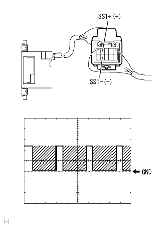

The back guide monitor system forecast course is not displayed.Also, "I can't guide" is displayed (AVX) |
| Step 1 | Service inspection |
Service inspection
Start the diagnostic and check if there is a display of the diag code [5C-41, 42] with an individual diag.(The point isreference)
| procedure | Diag code |
|---|---|
| To A | 5C-42 |
| To B | No diary cord |
| To C | 5C-41 |
|
| ||||
|
| ||||
| A | |
| Step 2 | Steering sensor inspection (IG1, BAT, ESS) |
 |
Voltage inspection
Use a SST (Toyota Electrical Tester) to check the voltage between the vehicle side wire harness connectors of each terminal with the connector separated.
| Tester connection | Measurement conditions | Reference value |
|---|---|---|
| IG1 ← → Body Earth | IG switch ON | 10-14V |
| BAT ← → Body Earth | Always | 10-14V |
Conduction inspection
Using SST (Toyota Electrical Tester), the connector is disconnected, and the conjunction between the ESS terminals and the body ground of the vehicle side wire harness connector is inspected.
| Tester connection | Measurement conditions | Reference value |
|---|---|---|
| ESS ← → Body Earth | Always | There is an conductor |
|
| ||||
| OK | |
| Step 3 | Steering sensor inspection (SS2+, SS2-) |
|  |
Waveform inspection
Using an oscilloscope, check the waveform between each terminal from the back of the connector with the connector of the vehicle side wire harness.
| item | Content |
|---|---|
| Measuring terminal | SS2+← → SS2- |
| Instrument set | 2V/Div, 1μs/Div |
| Measurement conditions | During screen drawing |
|
| ||||
| OK | ||
| ||